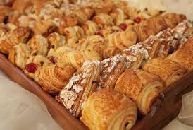

Cooking
For many, ordinary cooking has become an exciting hobby.
Someone may perceive the cooking process as hard labor at a hot stove, but for a culinary specialist, the cooking process is the highest pleasure, and happy smiles of friends and loved ones are the best reward. It is unlikely that someone long and deliberately decides to take up cooking as a hobby. As a rule, such a desire comes "from the heart." This path begins with the very first cooked fried eggs or fried potatoes.